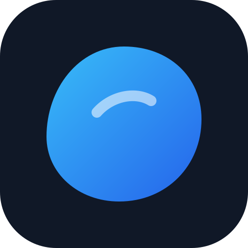
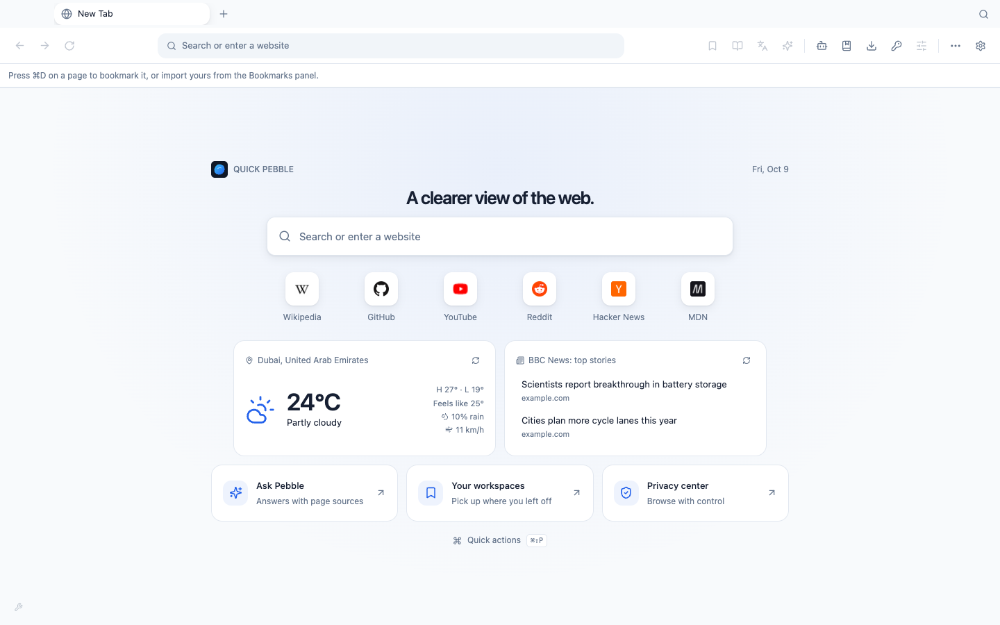
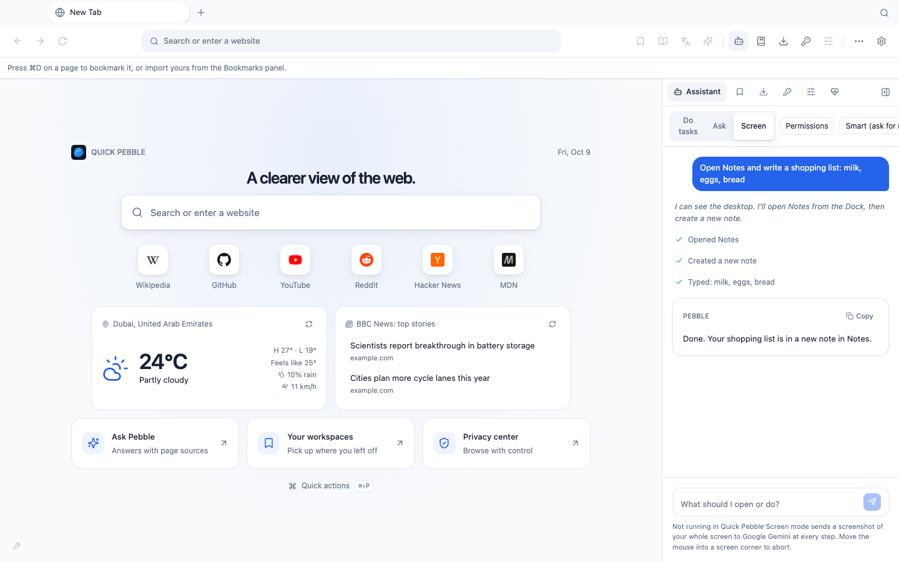
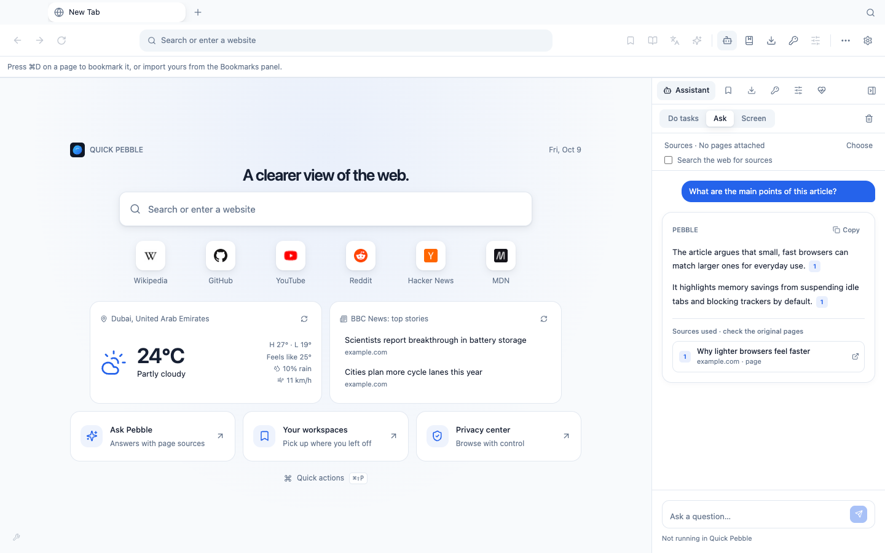
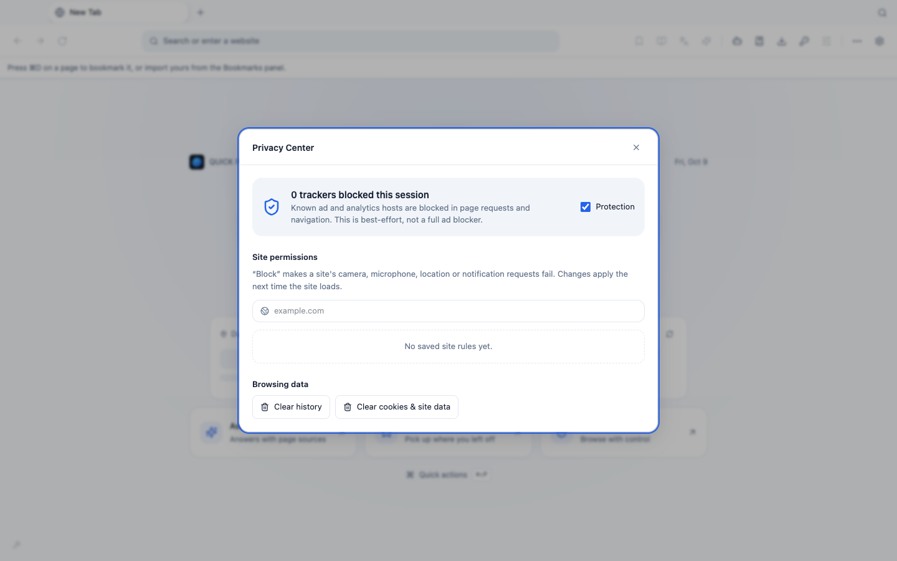
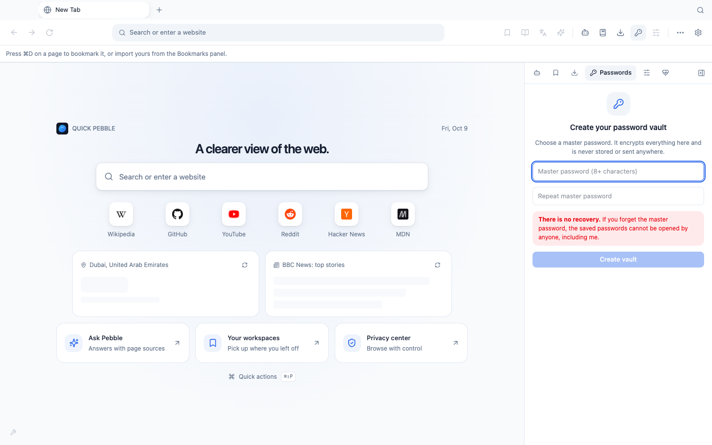
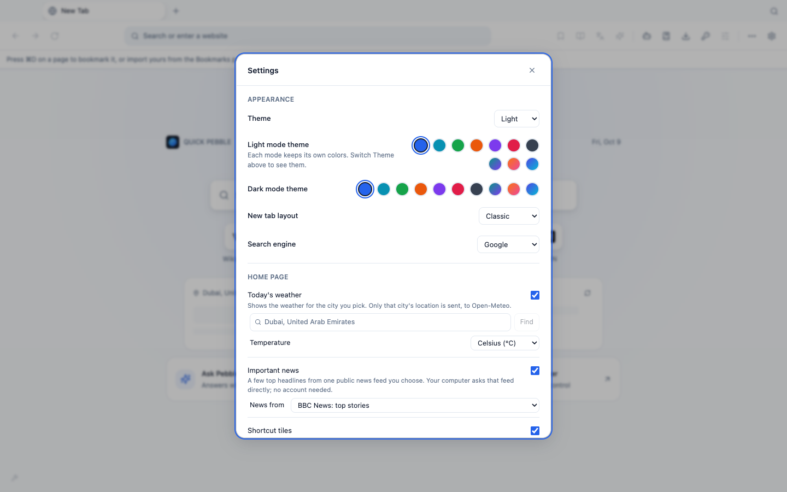
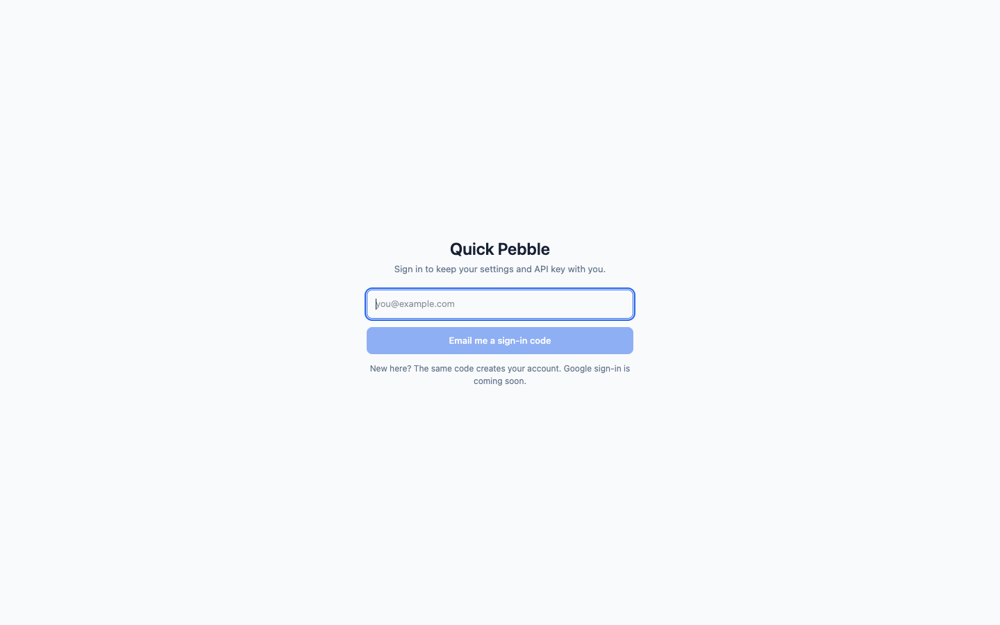
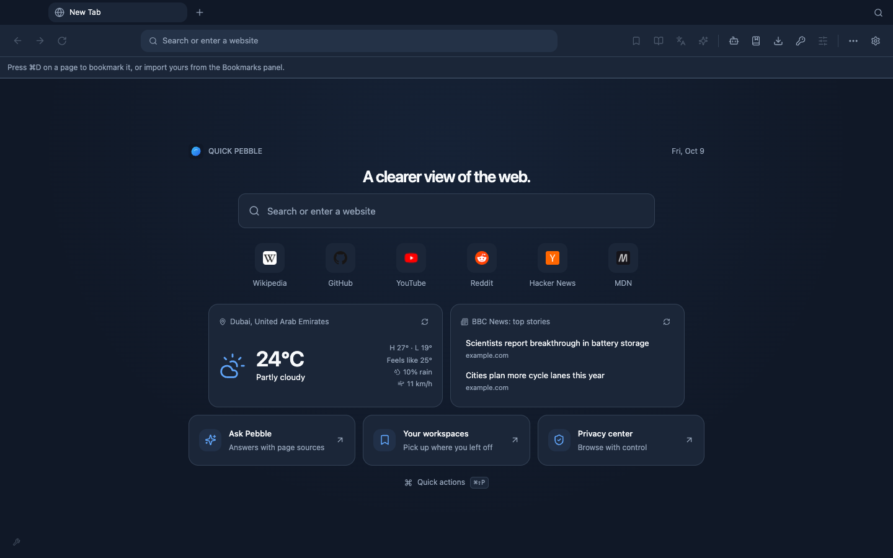

Less clutter, more clarity
Calm design, light on memory, and a little more room to focus.

Quick PebbleBROWSE QUICKER.
A lightweight, private browser with an AI assistant that reads pages, answers with sources, and can use your screen for you.
Free during beta. An access key is required to sign up.

A little less noise. A little more possibility. Screenshots show sample content.
Quick Pebble is currently in private beta. You need an access key to create an account. Don't have one? Ask the developers.
WHY PEBBLE
Built around the things you actually do.
Calm design, light on memory, and a little more room to focus.
Blocks ads and trackers, upgrades to HTTPS, and declines cookie banners for you.
Ask about a page, read an answer with sources, summarize, or translate.
Describe a job. Let Pebble click and type, with your approval for risky steps.
A FEW GOOD TOOLS
Describe a task and the AI operates your mouse and keyboard step by step. Routine steps run automatically. Risky or important actions ask first with numbered choices: press 1, 2, or 3. It double-checks before submitting. Move your mouse into a screen corner to stop. Requires a free Gemini API key and Python 3.

Ask about the page you are on and get answers with numbered sources you can open. Summaries and translation are right beside you.

Ad and tracker blocking, HTTPS-only mode, and automatic cookie-banner refusal put you in control.

A master-password-encrypted vault, imports from other password managers, and autofill. Automatically locks after 15 minutes idle. Keep your master password safe: there is no recovery.

Ten color themes, separate choices for light and dark mode, home page options, and your preferred search engine.

Sign in with an emailed code. Your Gemini API key is saved encrypted to your account and is there when you sign back in. You stay signed in after updates.

Optional weather and news cards, plus shortcut tiles.
Site profiles and permissions, bookmark folders and import, downloads, collapsible tab groups, and page translation.
Tab suspending saves memory. Automatic update notifications keep you informed inside the browser.
HOW SCREEN MODE WORKS
Screen mode sends a screenshot to Google Gemini at every step. You can stop it any time.
01 / THE PEBBLE TOUR
Tell Pebble what you want to do in plain language. Screen mode looks at your screen and works step by step.
02 / THE PEBBLE TOUR
Switch to Ask for explanations, summaries, and answers with sources you can check.
03 / THE PEBBLE TOUR
Control tracking, secure connections, and site permissions.
04 / THE PEBBLE TOUR
Save and autofill from your master-password-encrypted vault.
05 / THE PEBBLE TOUR
Choose your colors, home page, and search engine.
A LITTLE MORE YOU
Ten themes. Light and dark mode each keep their own.
Pebble · Try a color above to recolor this page.


YOUR NEXT NEW TAB
For Mac and Windows. Latest release: see GitHub.
Choose the chip in your Mac.
Mac, Apple silicon (M1/M2/M3/M4) ↓Mac, Intel ↓Windows 10/11, 64-bit.
Download for Windows ↓.msi installer (for managed PCs) ↗Private beta: an access key is required to sign up.
Not sure which Mac you have? Apple menu > About This Mac. “Apple M…” means Apple silicon; “Intel” means Intel.
brew tap VirajSinghChadha/quickpebble https://github.com/VirajSinghChadha/Quickpebble && brew install --cask quick-pebbleBUILT AFTER SCHOOL. MADE WITH CARE.
Quick Pebble is built by two high-school developers. If you like it, please donate to support us.
Litecoin (LTC) address
ltc1qy0sym40lmg0y0txxla8vnz9z6623d7l4gr5yfmOnly send Litecoin (LTC) to this address.
GOOD QUESTIONS
Free during the beta.
We’re letting people in gradually while we test. Ask the developers for a beta access key.
It’s stored encrypted on your account and never shown to anyone else.
Screenshots to Google Gemini at every step, only while you use Screen mode. You can stop it any time.
Mac with Apple silicon or Intel, and Windows 10/11 (64-bit). Screen mode also requires Python 3 and a Gemini API key.
Quick Pebble is not yet signed with a paid developer certificate. Follow the installation guides linked above.